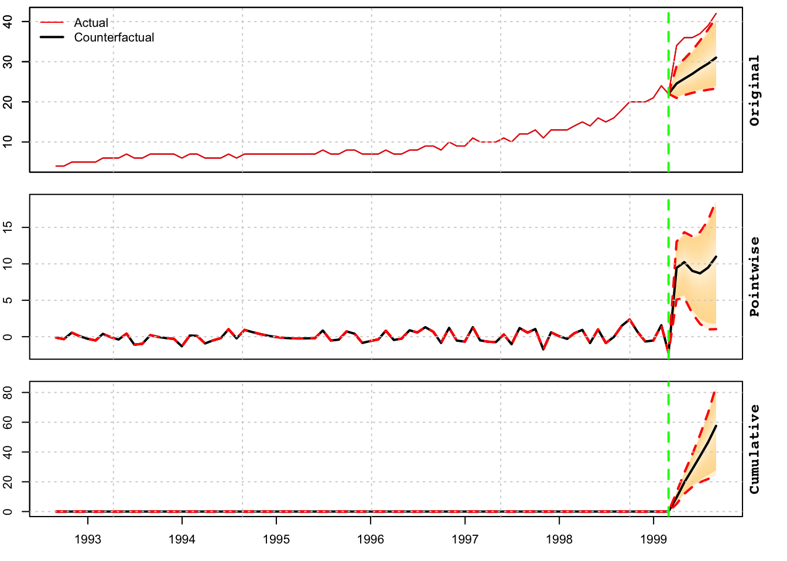

Chapter 8 tscausal package
8.1 Introduction
The objective of the tscausal package is to provide an easy to use framework to evaluate any time series based forecast distribution, proxy for the counterfactual distribution, and generate an automatic set of diagnostics on the significance of an intervention. It is heavily influenced by the CausalImpact package described in Brodersen et al. (2015), and from which it borrows parts of the code diagnostics and output narrative.19
Unlike CausalImpact, the package is agnostic to any particular time series model, but it does require that the forecast distribution conform to certain requirements, namely that it inherits the class tsmodel.distribution. Any matrix of size \(N\times h\), representing the \(N\) simulated points for each forecast period \(t\in h\), where \(t>T\) (the intervention date), can be coerced to this class. It is assumed that the user can and has trained a model on the pre-intervention period and our code repository provides for a wide array of models, with common calling conventions and the ability to generate frequentist simulated or Bayesian predictive distributions, all of which inherit class tsmodel.distribution.
8.2 Measures of Evaluation
This section provides a summary overview of the measures used to evaluate the possible presence of a causal effect, and follow Brodersen et al. (2015) closely.
8.2.1 Pointwise Impact
Given an intervention date \(T\), and a post-intervention period under consideration \(T+1,\ldots,T+h\), the causal pointwise effect \(\phi^{(s)}_{t}\) for all \(t \in T+1,\ldots,T+h\) given a draw \(s\) from the predictive distribution is:
\[ \phi^{(s)}_t = y_t - \hat y^{(s)}_t \]
where \(y_t\) represents the outcome variable and \(\hat{y}_t\) the forecasted (or counterfactual) variable. Because we have a distributional forecast, which represents the uncertainty about the forecasted variable \(\hat{y}_t\) at each date in the horizon \(T+1,\ldots,T+h\), and draws indexed by \((s)_1,\ldots,(s)_N\), we can generate an empirical distribution of any function applied to the distribution (e.g. summation, differences etc). Given a significance level \(a\)%, the \(100-a\)% confidence interval can be evaluated by making use of the empirical quantile function from this distribution.
8.2.2 Cumulative Impact
The cumulative impact is derived from the pointwise impact as:
\[ \Phi _t^{(s)} = \sum\limits_{i = T + 1}^t {\phi _i^{(s)}}, \]
which is a useful quantity when the outcome represents a flow variable (e.g. revenue, signups), measured over an interval of time, however is not interpretable when it represents a stock variable (e.g. inventory, subscribers).
8.2.3 Mean Effect
Given an intervention date \(T\), and a post-intervention period \(T+1,\ldots,T+h\), then the average effect given a draw \(s\) from the predictive distribution is:
\[ {\alpha ^{(s)}} = \frac{1}{{t - T}}\sum\limits_{i = T + 1}^{T + h} {{{y_i} - \hat y_i^{(s)}} }. \]
8.2.4 Mean Relative Effect
A related measure, showing the relative effect of the intervention can be defined:
\[ {r^{(s)}} = \frac{{{\alpha ^{(s)}}}}{{{\mu _{\hat y}}}}, \] where \(\mu_{\bar y}\) is the mean of the forecasted variable \(\forall t>T\) and \(\forall s\).
8.3 Evaluation of Significance
Given a significance level \(a\), under the null hypothesis that the intervention was not significant, we fail to reject if \(F^{-1}_n\left(\alpha/2\right)<0\) and \(F^{-1}_n\left(1-\alpha/2\right)>0\), and reject otherwise. For instance, if the effect was positive with a lower quantile value above zero then we would reject the null and conclude that the effect was positive and significant. If the effect was negative with an upper quantile value less than zero we would also reject the null and conclude that the effect was negative and significant.
Another statistic which can be used to evaluate whether the results could have occurred by chance is given by the following:
\[ \frac{1}{N}\sum\limits_{j = 1}^N {\left[ {\left( {\sum\limits_{i = T + 1}^{T + h} {\phi _t^{(j)}} } \right) \geqslant 0} \right]}, \]
which measures the percent of times the total net effect of the distribution was positive, measured over the entire forecast horizon and across all draws.
8.4 Package Features
The package has one main method called tscausal which takes as arguments a tsmodel.distribution object, the outcome variable (as xts object which includes both the pre and post intervention data), an optional xts vector (or tsmodel.distribution) of the in-sample fitted values and the significance level for hypothesis testing alpha, as shown below:
## function (object, actual, fitted = NULL, alpha = 0.05, include_cumulative = TRUE,
## ...)
## NULLAdditionally, once the causal object has been created, there are methods for plotting (plot), printing of results (print) as well as a reporting (tsreport) which can be used to automatically generate a pdf, doc or html report with full evaluation and graphics. The next section provides a demonstration.
8.5 Package Demo
We use the priceunits dataset from the tsdatasets package, in particular the units series, and add an artificial structural break during 1999-03, which could represent for instance a large drop in prices, a large substitution effect or a successful marketing campaign.
data(priceunits, package = "tsdatasets")
priceunits <- priceunits[, 2]
priceunits["1999-03/"] <- priceunits["1999-03/"] + 10
train <- "/1999-02"
test = "1999-03/1999-08"
y_train = priceunits[train]
y_test = priceunits[test]
spec <- ets_modelspec(y_train, frequency = 12, lambda = 0, model = "AAN")
mod <- estimate(spec)summary(mod)##
## ETS Model [ AAN ]
##
## Parameter Description Est[Value] Std. Error t value Pr(>|t|)
## ---------- ------------------ ----------- ----------- -------- ---------
## alpha State[Level-coef] 0.3253 0.0683 4.7651 0.0000
## beta State[Slope-coef] 0.1057 0.0344 3.0674 0.0022
## l0 State[Level-init] 1.3528 0.0482 28.0470 0.0000
## b0 State[Slope-init] 0.0632 0.0181 3.4834 0.0005
##
##
## LogLik AIC BIC AICc
## -------- ------- ------- -------
## 25.0856 -40.17 -28.32 -39.35
##
##
## MAPE MASE MSLRE BIAS
## ------- ------- ------- -------
## 0.0692 0.9563 0.0067 0.0054prediction <- predict(mod, h = nrow(y_test), nsim = 5000)Note that the prediction object has a number of slots, one of which is called distribution and inherits the following classes: tsets.distribution, tsmodel.distribution. All our packages have a predictable and common set of slots in the returned prediction objects.
The final step is to pass the forecast distribution to the tscausal method and generate a report with a narrative explaining the results and a decision on whether to reject or not the null of no intervention effect.
cause <- tscausal(prediction$distribution, actual = rbind(y_train,
y_test), fitted = fitted(mod))
print(cause)## Predictive inference {tscausal}
##
## Average Cumulative
## Actual 37.33 224.00
## Prediction (s.d.) 27.88 (2.537) 167.28 (15.225)
## 95% CI [23, 33] [140, 199]
##
## Absolute effect (s.d.) 9.453 (2.537) 56.717 (15.225)
## 95% CI [4.2, 14] [25.0, 84]
##
## Relative effect (s.d.) 33.91% (9.101%) 33.91% (9.101%)
## 95% CI [15%, 50%] [15%, 50%]
##
## Predictive Distribution tail-area probability p: 6e-04
## Predictive Distribution prob. of a causal effect: 99.94001%tsreport(cause)During the post-intervention period, the response variable had an average value of approx. 37.3333. By contrast, in the absence of an intervention, we would have expected an average response of 27.88. The 95% interval of this counterfactual prediction is [23.3582, 33.1686]. Subtracting this prediction from the observed response yields an estimate of the causal effect the intervention had on the response variable. This effect is 9.4529 with a 95% interval of [4.1647, 13.9751]. For a discussion of the significance of this effect, see below.
Summing up the individual data points during the post-intervention period (which can only sometimes be meaningfully interpreted), the response variable had an overall value of 224.0000. By contrast, had the intervention not taken place, we would have expected a sum of 167.28. The 95% interval of this prediction is [140.1494, 199.0119].
The above results are given in terms of absolute numbers. In relative terms, the response variable showed an increase of +34%. The 95% interval of this percentage is [+15%, +50%].
This means that the positive effect observed during the intervention period is statistically significant and unlikely to be due to random fluctuations. It should be noted, however, that the question of whether this increase also bears substantive significance can only be answered by comparing the absolute effect (9.4529) to the original goal of the underlying intervention.
The probability of obtaining this effect by chance is very small (Bayesian one-sided tail-area probability p = 0.001). This means the causal effect can be considered statistically significant. NULL
The tsreport method has options for printing to screen or generating a pdf, html or docx (with option to use a template as well). Example usage is provided below:
tsreport(cause, type = "pdf", output_dir = "~/tmp", args = list(model = "ETS[AAN]",
frequency = 12, name = "Units"))
tsreport(cause, type = "html", output_dir = "~/tmp", args = list(model = "ETS[AAN]",
frequency = 12, name = "Units"))
tsreport(cause, type = "doc", doc_template = "~/tmp/mytemplate.docx",
output_dir = "~/tmp", args = list(model = "ETS[AAN]", frequency = 12,
name = "Units"))